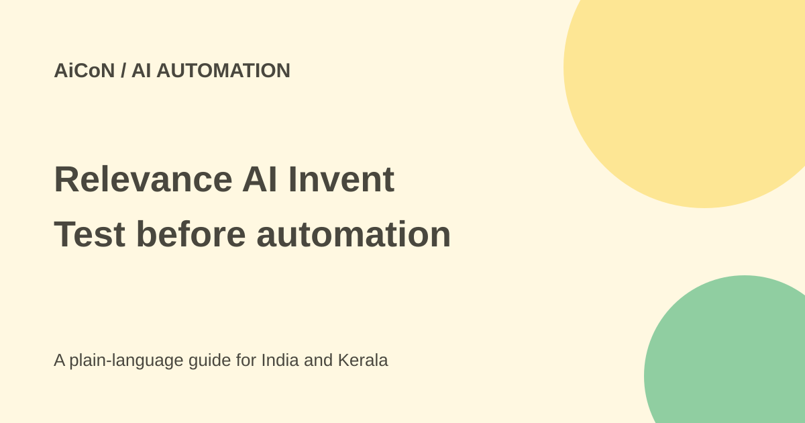

Relevance AI Invent: agent teams, paid plans and checks
Invent helps design and manage teams of AI agents. Its marketing page still shows a free plan, but current pricing documentation says Free is retired. Check the account offer before planning a no-cost workflow.

What is Invent 2.0?
Relevance AI describes Invent as a collaborative builder that interviews you, reads process documentation and maps a workflow. It then designs coordinated specialist agents with tools, integrations, tests and governance.
Examples include research, qualification, drafting and operational work. A team of agents can split jobs, but connecting tools does not make the workflow correct or give it permission to contact people, spend or change records.
Testing and ongoing checks
The September release describes performance requirements before deployment, sampling of live runs, drift detection and proposed improvements. It also claims customers can move from idea to production in hours rather than weeks.
These are vendor descriptions, not a guaranteed timetable or an independent reliability test. Define your own correct outcomes, failure cases and escalation rules. A test that passes ordinary examples can still miss a wrong recipient, stale record or unsafe exception.
Is a free plan still available?
The public pricing-new marketing page still displays Free with 200 actions per month. However, the current pricing documentation explicitly says the Free plan is retired for both new signups and existing accounts and that organisations must upgrade to Pro or Team to keep using the service.
Those official surfaces conflict. This guide does not promise a usable free allowance. Check the actual account and checkout terms before relying on either description. The archive's free-start claim should not be repeated without that check.
Pro pricing: monthly is different from annual
The current docs list Pro at US$29 on monthly billing and US$19 per month on annual billing. At the sourced reference of ₹96.43 per dollar, those labels are approximately ₹2,796 and ₹1,832. The annual label is not a verified cancel-after-one-month price.
Before subscribing, read the actual annual total, taxes, conversion, renewal and cancellation terms. The pages contain some inconsistent older credit and pricing material, so this guide uses the detailed current pricing docs for the stated plan rather than combining conflicting tables.
Pro's documented allowance is 30,000 actions yearly or 2,500 monthly, with unlimited agents and tools, two build users, one project and a ninety-day task history. Unlimited agents does not mean unlimited execution.
Actions and model costs are separate
The platform distinguishes Actions from Vendor Credits. Actions cover what agents do; Vendor Credits cover model and tool costs. Bringing your own API keys can move a provider charge outside the platform rather than making the work free.
The docs say included plan Actions reset at renewal, while purchased Action top-ups roll to the next cycle. Vendor Credits roll over while subscribed. Read the exact plan conditions and monitor both counters; a multi-step workflow may use several actions and model calls.
How to build a safer first workflow
- Verify current access, plan, billing period and usage allowances.
- Choose one narrow process with clear success criteria.
- Use sample or redacted records before connecting production systems.
- Grant only the tools and data each agent needs.
- Keep external messages, purchases and sensitive edits behind review.
- Test wrong inputs, duplicate runs, missing records and failure paths.
- Inspect logs and counters before deploying a real trigger.
- Monitor drift and require review of proposed changes.
Integrations and privacy
The product showcases business applications and custom connectors. Availability of an integration does not establish that your organisation approves it. Check which records are read, where model processing occurs and who can inspect task history.
Do not upload credentials in a process document or let an agent learn from confidential records without approval. Use the platform's proper secret-entry and connection routes and review the scopes. This guide did not connect accounts or launch agents.
For India and Kerala
A small business can begin with a draft-only process before automating customer communication or CRM updates. Test local names, Malayalam content and Indian date or currency formats. Keep model costs and foreign-currency billing visible in a rupee budget.
What changed since the original post?
This guide records the Free-plan conflict, separates annual Pro pricing from monthly billing, and explains Actions versus Vendor Credits. It keeps speed and monitoring claims attributed rather than promising autonomous success.
Frequently asked questions
Is Free guaranteed now?
No. The current docs explicitly say it is retired.
Does unlimited agents mean unlimited usage?
No. Execution and model costs have separate allowances.
Was an agent team run?
No. This guide is source-based preparation.
Sources: Invent product · Invent 2.0 release · Marketing pricing · Current pricing docs · Actions and credits · INR reference. Checked 7 October 2026.